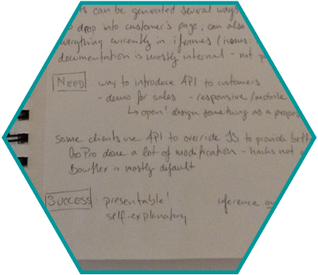
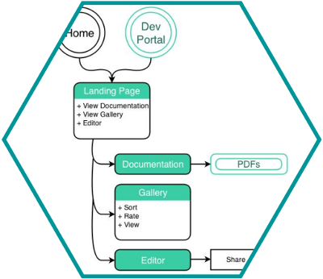

PowerReviews

PowerReviews is one of the top providers of reviews, ratings, and question-and-answer sections on e-commerce websites. Many of their customers asked for an easy way to customize the out-of-the-box HTML/CSS/JS solution.
PowerReviews Images.
PowerReviews wanted to make their API easily accessible to customers, for creating customizable product review sections.
Created an online explorer and editor for the PowerReviews API that allows users to understand the API elements available, and to customize the way display.
Collaborated on every aspect of the project. Focused on user research and feedback, Information Architecture, client communications, and polishing wireframes and prototype.
Omnigraffle,
Invision,
Keynote,
Google Drive.
I collaborated with one other classmate, Andrew Lux, on every aspect of this project. We worked together on research, sketches, persona generation, a paper prototype that was far more complicated than necessary, and user testing. He focused on creating high-fidelity wireframes and a prototype. I synthesized the user feedback, analyzed the Information Architecture and created the site map, polished the personas, and led communications with our client.

The first research was talking to instructors and other classmates about their interactions with APIs. After looking through several resources and learning more about the details of an API call, we started looking into various types of online code editors.
Our design is heavily influenced by jsfiddle. As a service, it has wide usage across skill levels and developer communities. We needed a way of displaying all of the file types at once, and preferably a visual display of the results. jsfiddle does this quite nicely, managing to pack a lot of information into a compact screen.
Subsiquent user testing of paper prototypes validated this decision. Most of the iteration that we did was on the details of the layout of the screen; the universal response we got to prototypes at all fidelities was "wow! This is really great!" and "I would use the crap out of an API that had an interface like this".

Our initial reaction to the first client conversation was to head to the whiteboard with ideas. After further research into both design and technical aspects, as well as conversations with target users, we decided on the basic layout. As the sketches were filled in, we got user feedback on both layout and interactions.
We also did some text-sketching to develop our personas. We had gotten the idea in our heads from client conversations that this solution needed to be accessible to people who had no front-end coding experience. The three personas we developed were essentially beginner, intermediate, and advanced users. This led to some design conflicts, and a lot of confusion. We clarified with the client, though, that the beginner persona was not a user group they dealt with and we were able to refocus on intermediate and advanced users.

The next step was to create the Information Architecture for our solution. Armed with what I had learned about the structure of API calls and the user feedback on our sketches, I went to the whiteboard to work out a basic flow and site map. I wanted it to be as simple as possible, while still allowing for all of the information and documentation present on the current site to be available.
At each step of the way, we asked users for feedback. Because neither of us are developers and were new to API interactions, this was absolutely critical; it was also helpful to not be as directly a potential user from the get-go. (By the end, though, we both wanted to have a reason to use it!)
It was extremely difficult to test the interactions, and we ended up mostly just explaining to users what would happen when they "clicked" on a certain area of the paper prototype. Next time, I would definitely want to use tracing paper or the like to demonstrate overlays and changes to only small portions of a screen.